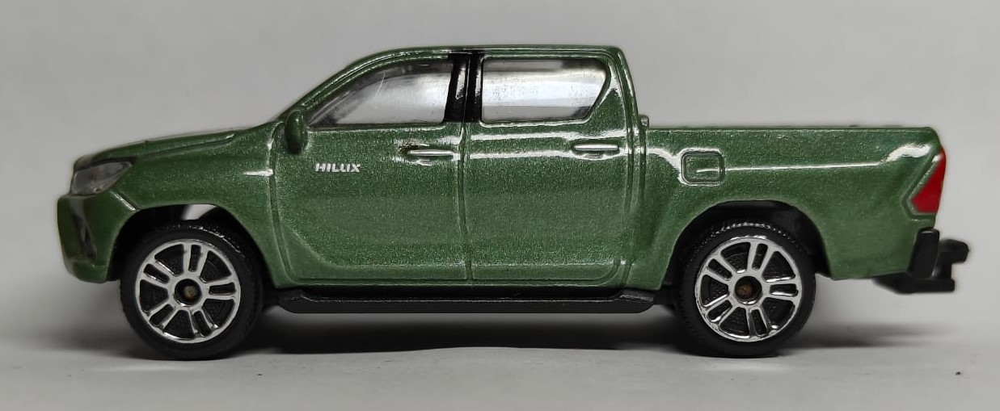

Toyota Hilux
The Toyota Hilux is a legendary pickup truck, known for its durability and reliability in tough environments.
Specifications
- Make: Toyota
- Model: Hilux
- Engine: 2.8L Diesel
- Horsepower: 201 hp
- Top Speed: 105 mph
The Toyota Hilux is a legendary pickup truck, known for its durability and reliability in tough environments.